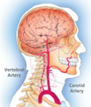
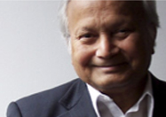

University of Pennsylvania First Year Medical Students, 1890
Sukhamay Lahiri
DPhil, PhD
1993-2009


Sukhamay Lahiri - Mt. Everest, Oxygen Sensing and the Carotid Body
Sukhamay Lahiri joined our Department of Physiology in1969 where he remained as Professor of Physiology until his death. He was a world leader in the study of oxygen sensing and homeostasis studied responses to changing oxygen levels over a broad range of experimental situations in cells, isolated organs and in humans. He was for decades arguably the most prominent scientist in this area and was invited to speak at every major conference on these subjects all over the world. His initial work which described physiological responses to high altitude was on Mount Everest, which he climbed for the first time in the 1960 expedition led by Sir Edmund Hillary. He made his final trip to Mount Everest in 1981. Other studies at high altitude were carried out in the Andes where he showed that birth at high altitude blunted the breathing responses to hypoxia which he later confirmed in studies of children born with cyanotic congenital heart disease.
His work with Cunningham and Lloyd at Oxford helped establish the new classic methods of evaluating the sensitivity of breathing to oxygen, carbon dioxide and metabolic acidosis. Later on his studies focused on the carotid body, the primary organ that senses oxygen in animals and humans. He recorded from fibers of the carotid and aortic bodies and showed differences in their response which suggested that the aortic body might more sensitive to oxygen content. He found that the slope of the response of the carotid body to hypoxia was augmented by carbon dioxide. Using inhibitors of oxidative phosporylation, he showed that oxygen and carbon dioxide were independently sensed by the carotid body. He examined various theories of the mechanism of carotid body sensing of oxygen and demonstrated using carbon monoxide as a probe the importance of cytochrome A3 in oxygen sensing. His last studies focused on how the genetic mechanisms, e.g. through the action of hypoxia inducible factor-1, were involved in O2 sensing by the carotid body and in the adaptation to hypoxia by other tissues and cells. He wrote over 150 scientific papers and edited many books. He was the recipient of an NIH merit review and a Humboldt Award.
He was born in Natore, India on April 1, 1933 in what is now Bangladesh. He received his bachelor’s degree from Presidency College in Calcutta in 1951. At Calcutta University he earned a master’s degree in 1953 and his PhD in Physiology as Jubilee Scholar in 1956.With a scholarship from the state of Bengal he earned a second PhD in Physiology from Oxford in 1959.He came to the United States in 1965 working first at the State University of NY in Brooklyn and then at Michael Reese Hospital in Chicago. He gardened, worked on committees for Indian Art for the Philadelphia museum, and was a serious and excellent photographer. But mostly he thought about science and had fresh insights that have led to major advances for which we are all grateful. He had many, many friends. In all of this he was always supported by his wife, Krishna. But his legacy continues through the research of many scientific heirs, the hundreds of his students, collaborators, and admirers.
Written by Neil S. Cherniack, Former Editor in Chief - Journal of Applied Physiology, 2009